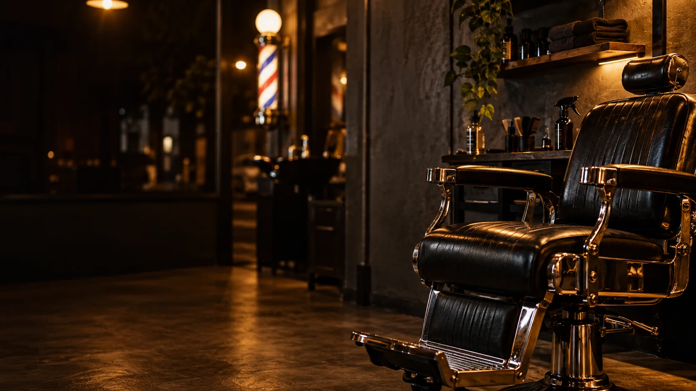
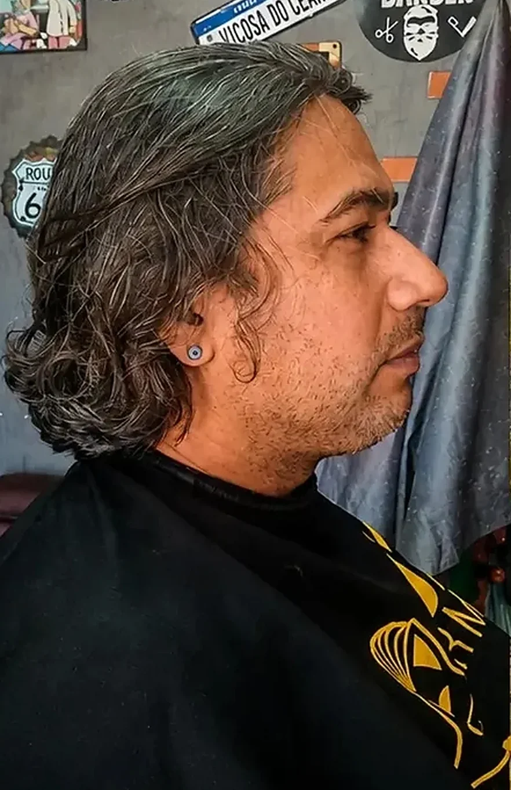
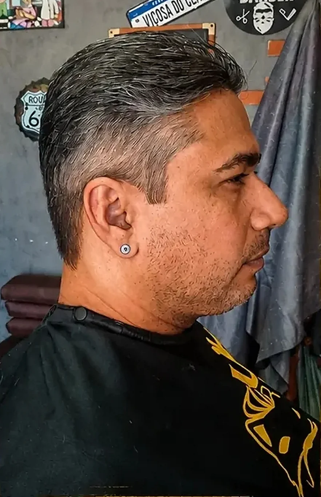
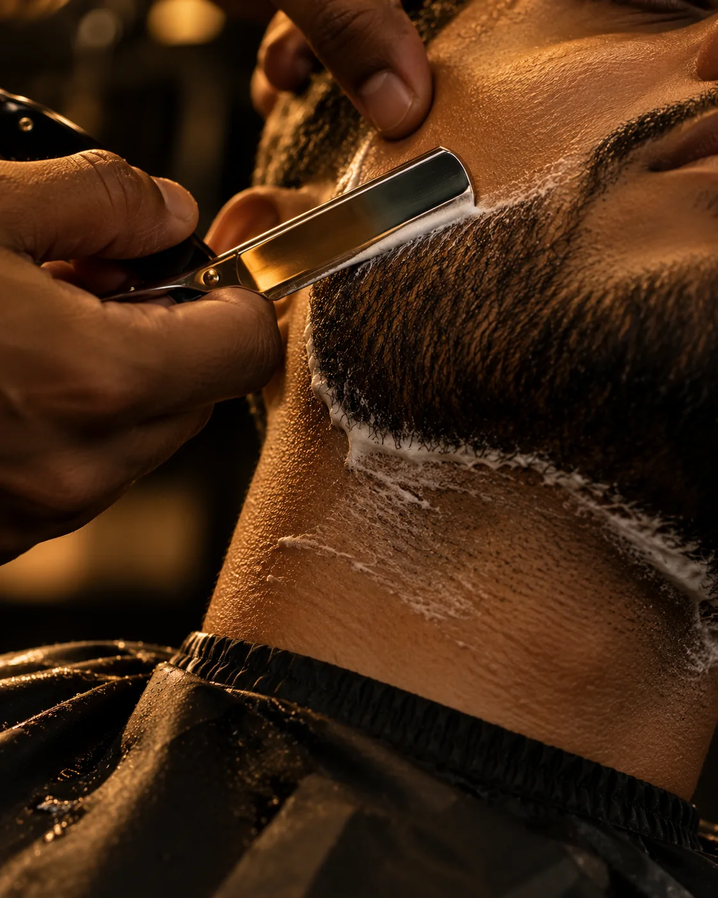
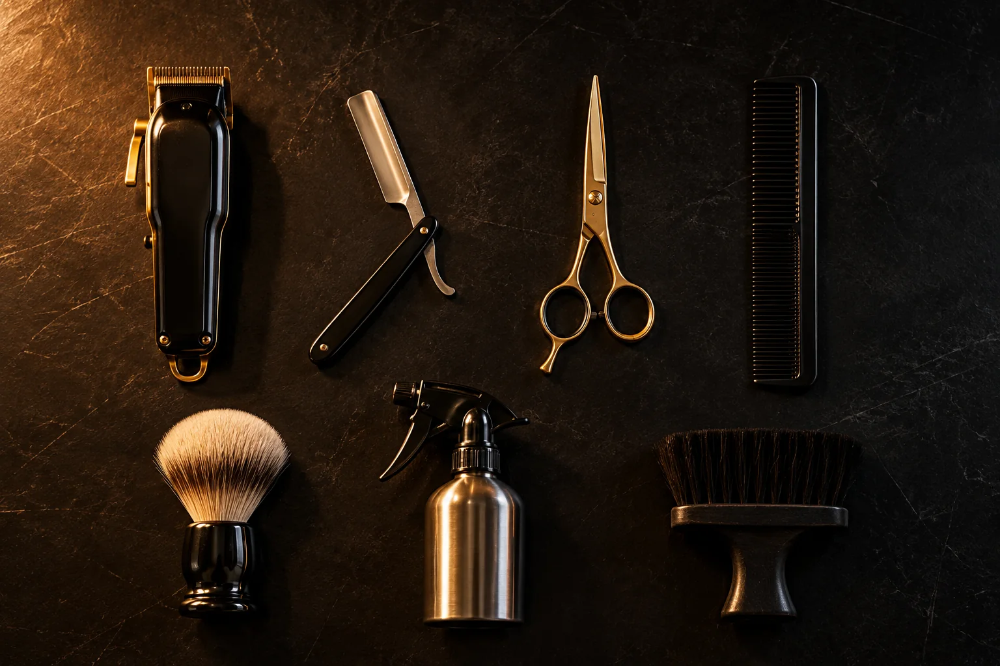
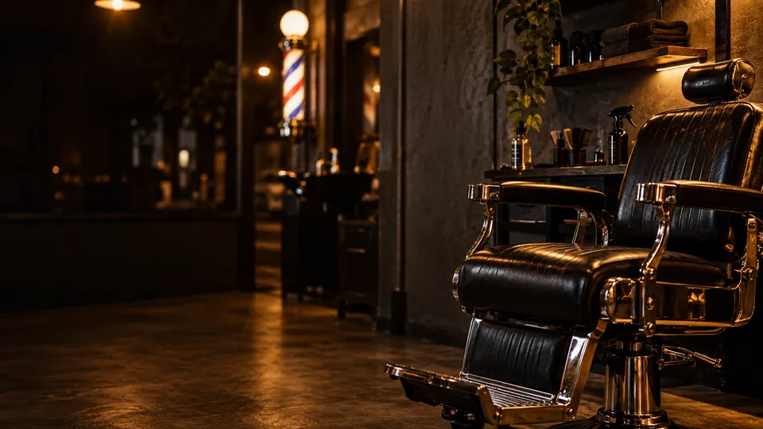
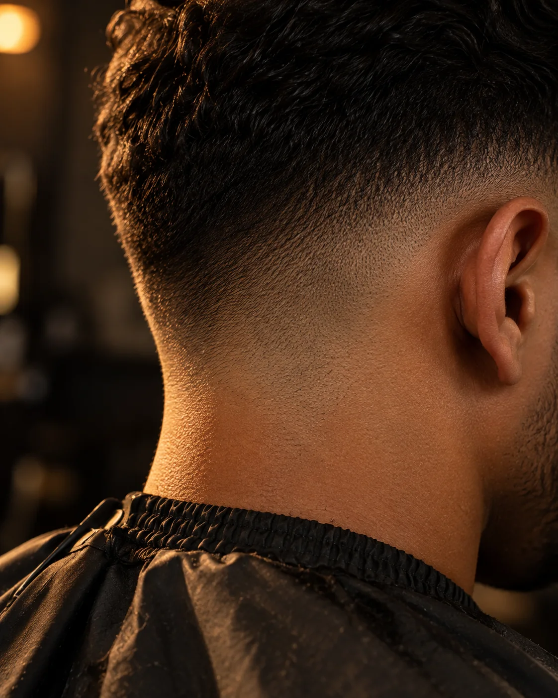

+ Estilo, + confiança, sempre você!

Barbearia no Parque Santa Rosa · Fortaleza · desde 2017
Seu estilo, nossa missão.
A cadeira do Tio Mil: corte no capricho, conversa boa e aquele visual novo que chega antes de você.
Você escolhe mudar.
Eu só entrego o trabalho. Chega com o cabelo do jeito que está e sai com o visual que você nem sabia que estava esperando por você.
Role a página ou arraste a linha para passar a máquina.
Trabalho real publicado no Instagram @tio_mil_barber.


Do antes ao depois, sempre você.

O detalhe é que fecha o visual.
Est. 2017
Deus no controle de tudo. Da bio do Tio Mil.
O kit do Tio.
Sete ferramentas, um visual. Role a página ou toque numa ferramenta para acender.

1 de 7
Máquina
O degradê começa aqui.
Na cadeira do Tio, é assim.
Quatro momentos, do bom-dia ao espelho.
-

Senta que o Tio já vem.
Chegou, puxa a cadeira. Aqui ninguém é número de senha.
-
Conversa primeiro.
Você diz o que quer. Na dúvida, a decisão sai junto, olhando no espelho.
-
Máquina, tesoura e pente.
O corte no detalhe, sem pressa de despachar ninguém.
-

Olha no espelho.
+ estilo, + confiança. E continua sendo você.
Monte seu horário. O Tio confirma no Zap.
Escolha o que quer fazer e quando fica bom. A mensagem sai pronta para o WhatsApp da barbearia; horário livre e valor o Tio confirma na conversa.
Onde fica a cadeira
Rua Francisco Almeida, 813
Parque Santa Rosa · Fortaleza · Ceará